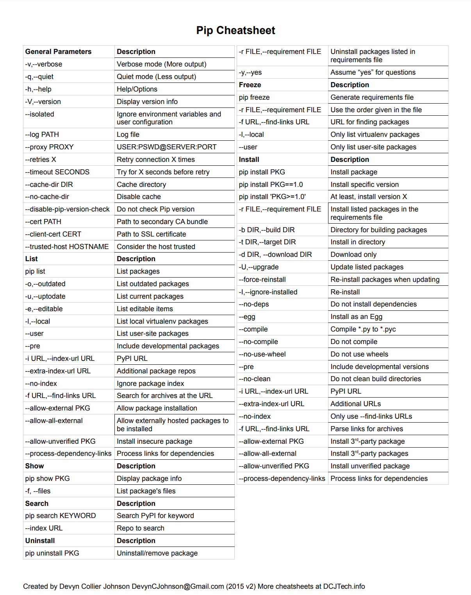

!pip freeze > ~/temp/requirements.txtCheatsheet
I like this version
http://dcjtech.info/wp-content/uploads/2015/10/Pip-Cheatsheet.pdf

thinks to know
install last versions
Didn’t know that to specify to install at least a given version, one need quotes
pip install 'PKG>=1.0'freeze
to generate requirements.txt
!cat ~/temp/requirements.txtcertifi @ file:///opt/conda/conda-bld/certifi_1663615672595/work/certifi
numpy==1.23.3
pandas==1.4.0
python-dateutil==2.8.2
pytz==2022.4
six==1.16.0pip-upgrader
Playing with pip-upgrader
import sys
!{sys.executable} -m pip install pip-upgraderLooking in indexes: https://pypi.org/simple/, https://artifactory.michelin.com/api/pypi/pypi/simple
Collecting pip-upgrader
Using cached https://artifactory.michelin.com/api/pypi/pypi/packages/packages/b2/42/36c09ad93ddbf10406e301f3d4d7d063cf27fa5cf7a881ccea78bb22cdc7/pip_upgrader-1.4.15-py2.py3-none-any.whl (16 kB)
Collecting packaging
Using cached https://artifactory.michelin.com/api/pypi/pypi/packages/packages/05/8e/8de486cbd03baba4deef4142bd643a3e7bbe954a784dc1bb17142572d127/packaging-21.3-py3-none-any.whl (40 kB)
Collecting requests
Using cached https://artifactory.michelin.com/api/pypi/pypi/packages/packages/ca/91/6d9b8ccacd0412c08820f72cebaa4f0c0441b5cda699c90f618b6f8a1b42/requests-2.28.1-py3-none-any.whl (62 kB)
Collecting colorclass
Using cached https://artifactory.michelin.com/api/pypi/pypi/packages/packages/30/b6/daf3e2976932da4ed3579cff7a30a53d22ea9323ee4f0d8e43be60454897/colorclass-2.2.2-py2.py3-none-any.whl (18 kB)
Collecting docopt
Using cached docopt-0.6.2-py2.py3-none-any.whl
Collecting terminaltables
Using cached https://artifactory.michelin.com/api/pypi/pypi/packages/packages/c4/fb/ea621e0a19733e01fe4005d46087d383693c0f4a8f824b47d8d4122c87e0/terminaltables-3.1.10-py2.py3-none-any.whl (15 kB)
Collecting pyparsing!=3.0.5,>=2.0.2
Using cached https://artifactory.michelin.com/api/pypi/pypi/packages/packages/6c/10/a7d0fa5baea8fe7b50f448ab742f26f52b80bfca85ac2be9d35cdd9a3246/pyparsing-3.0.9-py3-none-any.whl (98 kB)
Collecting urllib3<1.27,>=1.21.1
Using cached https://artifactory.michelin.com/api/pypi/pypi/packages/packages/6f/de/5be2e3eed8426f871b170663333a0f627fc2924cc386cd41be065e7ea870/urllib3-1.26.12-py2.py3-none-any.whl (140 kB)
Requirement already satisfied: certifi>=2017.4.17 in /home/guillaume/miniconda/envs/poubelle/lib/python3.9/site-packages (from requests->pip-upgrader) (2022.9.14)
Collecting charset-normalizer<3,>=2
Using cached https://artifactory.michelin.com/api/pypi/pypi/packages/packages/db/51/a507c856293ab05cdc1db77ff4bc1268ddd39f29e7dc4919aa497f0adbec/charset_normalizer-2.1.1-py3-none-any.whl (39 kB)
Collecting idna<4,>=2.5
Using cached https://artifactory.michelin.com/api/pypi/pypi/packages/packages/fc/34/3030de6f1370931b9dbb4dad48f6ab1015ab1d32447850b9fc94e60097be/idna-3.4-py3-none-any.whl (61 kB)
Installing collected packages: docopt, urllib3, terminaltables, pyparsing, idna, colorclass, charset-normalizer, requests, packaging, pip-upgrader
Successfully installed charset-normalizer-2.1.1 colorclass-2.2.2 docopt-0.6.2 idna-3.4 packaging-21.3 pip-upgrader-1.4.15 pyparsing-3.0.9 requests-2.28.1 terminaltables-3.1.10 urllib3-1.26.12!{sys.prefix}/bin/pip-upgrade --skip-package-installation ~/temp/requirements.txtFound valid requirements file(s):
/home/guillaume/temp/requirements.txt
Setting API url to https://pypi.org/simple/{package}/ as found in /home/guillaume/.config/pip/pip.conf. Use --default-index-url to use pypi default index
2/6: numpy ... up to date: 1.23.3
3/6: pandas ... upgrade available: 1.4.0 ==> 1.5.0 (uploaded on -)
4/6: python-dateutil ... up to date: 2.8.2
5/6: pytz ... up to date: 2022.4
6/6: six ... up to date: 1.16.0
Available upgrades:
+-----+----------+-----------------+----------------+--------------+
| No. | Package | Current version | Latest version | Release date |
+-----+----------+-----------------+----------------+--------------+
| 1 | pandas | 1.4.0 | 1.5.0 | - |
+-----+----------+-----------------+----------------+--------------+
Please choose which packages should be upgraded. Choices: "all", "q" (quit), "x" (exit) or "1 2 3"
Choice: ^C
Upgrade interrupted.